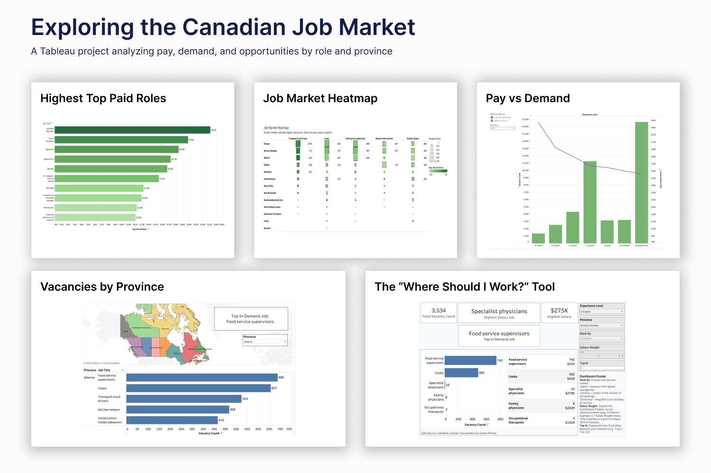
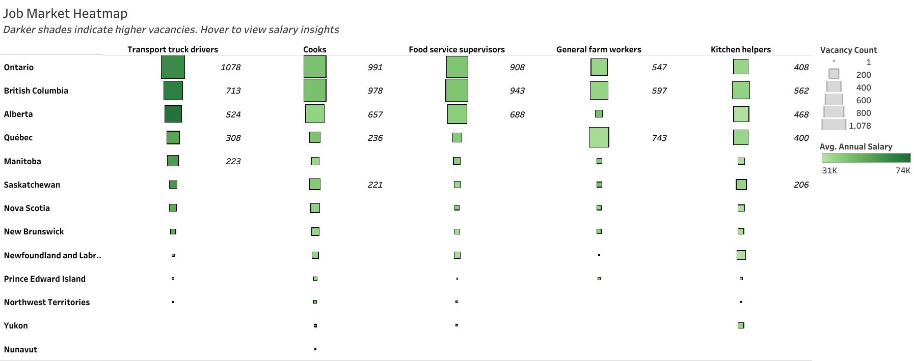

Canadian Job Market Analysis
Where should you work in Canada? Salary vs. demand across provinces, roles & experience levels.

The Bottom Line
Most job seekers look at job boards and guess. This project removes the guesswork. Using the official Canadian Job Bank dataset (July 2025), I analyzed salary, vacancy, and experience data across all provinces to answer one practical question: given your province, experience level, and priorities, which jobs should you actually apply for? The result is an interactive Tableau dashboard that functions as a career decision tool - not just a chart. It shows I can translate raw labor market data into something a real person can act on.
Key Findings at a Glance
ON & BC
Provinces with the highest job demand - top destinations for relocation decisions
$231K
Specialist physicians top the salary chart - healthcare and finance roles dominate the top 10 highest-paying positions nationally
Transport
Transport truck drivers have both high vacancy counts AND above-average pay - the strongest combined opportunity in the dataset
Interactive
"Where Should I Work" tool lets users filter by province, experience & salary vs vacancy priority
Project Overview
The Canadian job market is not uniform - salaries, vacancies, and in-demand roles vary dramatically by province and experience level. A job seeker in Ontario faces a completely different landscape than one in Saskatchewan. This project uses the Canadian Job Bank Dataset (July 2025) from the official Government of Canada website to answer four targeted questions:
- Which roles pay the most - and where in Canada?
- Which provinces have the highest number of vacancies right now?
- How does salary change as experience level increases - and does demand follow the same curve?
- Given all of the above, what job should a specific person actually apply for?
The Dataset
The dataset is sourced directly from the Government of Canada's Job Bank - the country's official national job board. The July 2025 extract includes job postings with fields covering job title, province, number of vacancies, salary range (min/max), and required experience level. The raw data required significant cleaning before it could be used for visualization - salary fields contained nulls, experience levels were inconsistently formatted, and job titles had spelling variations that would have caused undercounting in aggregations.
Methodology
1. Data Cleaning in Excel
All cleaning was done in Excel before connecting to Tableau. The goal was not just to make the data tidy - it was to make sure every calculated field in Tableau would produce accurate, trustworthy numbers.
- Removed irrelevant columns - kept only Job Title, Province, Vacancies, Salary (Min/Max), and Experience Level. Fewer columns means faster Tableau performance and cleaner data connections.
- Standardized job titles - merged spelling variants and duplicates (e.g., "Software Dev" and "Software Developer" treated as one role). Without this, aggregated vacancy counts per job title would have been silently undercounted.
- Handled salary nulls deliberately - replaced blank salary fields with "Not Specified" rather than zero, to avoid pulling down average salary calculations with false zero values.
- Removed unrealistic salary values - filtered out records showing less than $15/hour, which fell below Canada's minimum wage and indicated data entry errors rather than real postings.
- Built an Average Salary column from Min and Max salary fields - this became the primary metric for all salary comparisons in Tableau, giving a single comparable number per posting.
- Derived Annual Salary using Excel formulas and SWITCH logic to convert hourly, weekly, and monthly figures into a consistent annual figure - essential for cross-role salary comparison.
- Standardized Experience Level into consistent ranges (e.g., "1-3 years", "3-5 years") - the raw data had free-text entries that would have prevented grouping and filtering in Tableau.
2. Visualization in Tableau
Two dashboards and several charts were built to answer the project's core questions. Each one was designed around a specific decision a job seeker, employer, or policymaker needs to make - not just to display data.
"Where Should I Work" -Interactive Career Decision Tool
The centrepiece of this project. Users select their province, experience level, and ranking preference (Salary vs Vacancy), then type in how many top results they want to see (Top N). KPIs update instantly to show either the highest-paying role and its salary, or the most in-demand role and its vacancy count - depending on what the user prioritizes.
What this shows: Someone browsing this dashboard can immediately see it isn't a static chart - it's a working tool. Building it required Tableau Parameters, calculated fields, and dashboard actions working together.
Try the Live Tool on Tableau Public
Supporting Charts
Vacancies by Province & Job Role

Interactive map and bar chart showing the top 5 in-demand jobs per province. Finding: Ontario leads with Transport truck drivers (1,078 vacancies) and BC with Cooks (978). Cooks and Food service supervisors appear in nearly every province's top 5 - the most nationally consistent roles. Atlantic Canada is dominated by Fish and seafood plant workers, reflecting its coastal economy. National averages don't capture this, but province-level filtering does.
View Live Dashboard on Tableau Public
Pay vs Demand - Dual-Axis Chart

Plots experience levels against both vacancy counts and average annual salary on dual axes. Finding: Entry-level roles have significantly more vacancies but lower pay. Senior roles pay more but have far fewer openings. The crossover point - where demand drops and salary rises sharply - sits at the 3–5 year experience mark, making that the inflection point for career planning decisions.
View Live Dashboard on Tableau Public
Job Market Heatmap
Square size = vacancies, darker shade = higher salary across top roles and provinces. Finding: Transport truck drivers are the strongest combined opportunity - large squares AND darker shading in Ontario, BC, and Alberta. Cooks and Food service supervisors dominate in volume but are lighter in shade - high demand, lower pay ($31K-$74K range). High vacancy does not automatically mean good pay.
View Live Dashboard on Tableau Public
Top 10 Salaries by Province

Ranks the top 10 highest-paying roles per province with a province filter. Finding: Healthcare dominates the top - Specialist physicians ($231K), Family physicians ($198K), Optometrists ($172K), and Dentists ($167K) lead nationally. Sr. managers in financial services ($155K) is the only non-healthcare role in the upper tier. The gap between #1 and #10 ($231K vs $120K) is significant - credentials in medicine or finance yield dramatically different outcomes than high-vacancy roles like Cooks or Transport.
View Live Dashboard on Tableau Public
Key Insights & Findings
Salary vs Demand Trade-Off
Entry-level roles have more vacancies but lower pay. Senior roles pay significantly more but have fewer openings. The sharpest jump in salary relative to demand occurs at the 3-5 year experience mark - making that the most strategic point for upskilling investment.
Provincial Job Market Gaps
Ontario and BC have the highest vacancy volumes - making them the strongest targets for relocation. However, some smaller provinces offer competitive salaries in specialized roles with less competition, which the heatmap makes visible at a glance.
Top-Paying Roles Are Consistent Across Provinces
Healthcare dominates the top 10 salary rankings nationally - Specialist physicians at $231K, Family physicians at $198K, Optometrists at $172K. The only non-healthcare role in the upper tier is Sr. managers in financial services at $155K. A candidate targeting maximum earnings needs credentials in medicine or finance - the high-vacancy roles like Cooks and Transport, while in demand, sit at a completely different salary tier.
High Demand is not equal to High Pay - With One Exception
Cooks and Food service supervisors have consistently large vacancy counts but sit at the lower end of the $31K-$74K salary range - high volume, lower pay. Transport truck drivers are the exception: high vacancy counts across Ontario, BC, and Alberta AND above-average salary shading on the heatmap. For a candidate open to trades, Transport is the strongest combined opportunity in the dataset.
Business Impact
This project delivers actionable value for three distinct audiences:
For Job Seekers
Instead of guessing which jobs to apply for, a candidate can filter by their own province and experience level and get a ranked list of roles - sorted by whatever they care about most, salary or demand. That's a tool, not a chart.
For Employers
Salary benchmarking by province and role is immediately available. A hiring manager in BC can see how their offered salary compares to the provincial average for that role - and whether their vacancy count is typical or unusually high.
For Policymakers
Labor market gaps - provinces where demand is high but qualified candidates are scarce - are visible in the heatmap. This kind of visibility supports targeted immigration, training, and education funding decisions.
Summary
TOOLS
Excel (Data Cleaning), Tableau (Visualization)
OBJECTIVE
To analyze Canadian job market trends and support job seekers in making informed career decisions.
KEY SKILLS
Calculated Fields | Parameters | Dual-Axis Charts | Dashboard Actions | Interactive Filters | Data Cleaning in Excel
Explore the Project
Dive deeper into the interactive dashboards and explore the full project code.